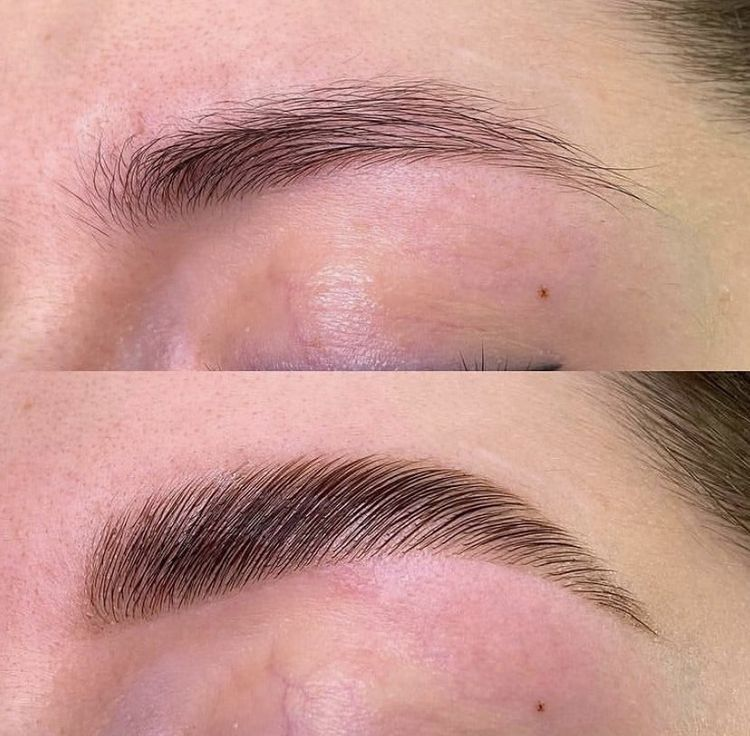
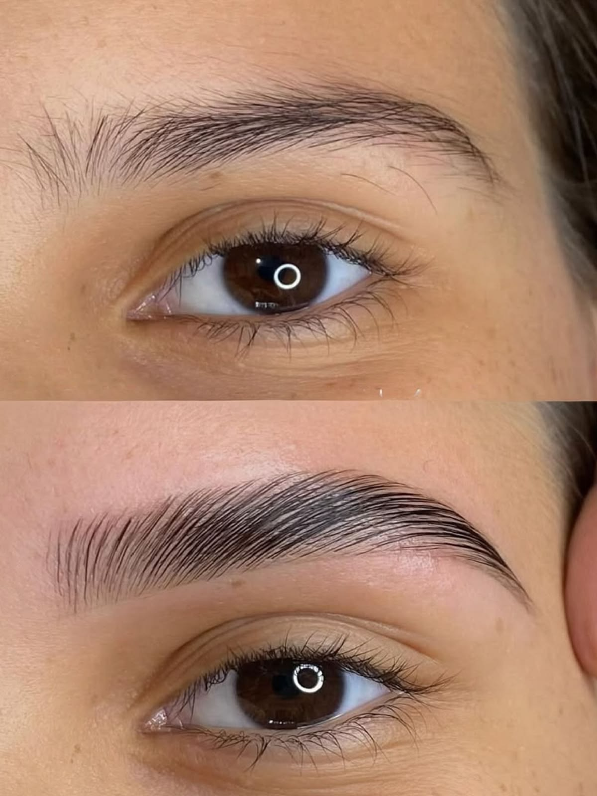

Diseño · Laminado · Tinte · Granollers
Laminado de cejas en Granollers: Natural Brow, con diseño y tinte
En Nohuska, la forma y la dirección de tus cejas se adaptan a tu rostro y al acabado que buscas.
Sin tinte: 45 € · Natural Brow™ con tinte: 55 €.
Ambas citas duran aproximadamente 1 hora e incluyen visagismo, diseño personalizado, depilación y laminado.

Trabajo propio · Publicación autorizada
Natural Brow: antes y después

Fíjate en la forma y en el color
En esta ceja puedes comparar la dirección del pelo antes y después del laminado. La foto muestra el acabado, no cuánto durará.
La portada muestra otro caso de Nohuska. Tu diseño parte de la densidad, el crecimiento y el tono de tu propia ceja.
Ver otro caso de Natural Brow y sus límites en Results Lab →
Opiniones publicadas en Google: 5,0/5 · 33 reseñas del centro. Dato consultado el ; no es una puntuación específica del laminado.
El acabado lo eliges tú
Natural y ordenado o más elevado, tipo fluffy: en Nohuska la dirección se adapta al pelo disponible y a tu preferencia. Con Natural Brow también se acuerdan el tono y la intensidad del tinte para dar más definición. No todas las cejas permiten el mismo resultado.
Tu preferencia se añadirá a la consulta por WhatsApp, sin cambiar la modalidad elegida.
Si todavía no lo sabes, pide una valoración gratuita antes de reservar. El laminado orienta el pelo existente: no crea pelo nuevo ni rellena por sí solo una zona sin vello.
Con tinte o sin tinte · Diseño personalizado
Cómo trabajamos el laminado y tinte de cejas
El laminado o Brow Lift ordena el pelo que ya tienes. Ambas modalidades parten del visagismo y del acabado acordado; Natural Brow añade el color.
La cita se realiza en Nohuska Beauty Lab, Avinguda Sant Esteve, 40, 08402 Granollers. Si vienes desde Canovelles, Les Franqueses, La Roca, Cardedeu u otra localidad del Vallès Oriental, consulta disponibilidad antes de desplazarte.
Precio y preguntas sobre el laminado de cejas Natural Brow
¿Qué incluye el laminado de cejas Natural Brow?
Natural Brow incluye visagismo, diseño, laminado, depilación y tinte de cejas. Acordamos contigo la forma y el tono antes de empezar. La cita dura aproximadamente 1 hora.
¿Qué diferencia hay entre Natural Brow™ y Korean Gaze™?
Natural Brow™ es el protocolo propio de cejas de Nohuska: diseño, laminado y tinte, por 55 € en aproximadamente 1 hora. Korean Gaze™ incorpora Natural Brow y lifting coreano con tinte de pestañas, por 85 € en aproximadamente 90 minutos. Ambos requieren valorar el pelo natural; no incluyen micropigmentación.
¿Es micropigmentación?
No. Es un tratamiento no permanente que trabaja el pelo existente. Si hay zonas sin densidad, valoramos por separado si conviene micropigmentación.
¿Puedo reservar laminado de cejas sin tinte?
Sí. Cuesta 45 € e incluye visagismo, diseño personalizado, depilación y laminado, en una cita de aproximadamente 1 hora. Si quieres añadir color, elige Natural Brow por 55 €.
¿Puedo elegir un acabado natural o más elevado?
Sí. En Nohuska se trabaja un acabado natural y ordenado o más elevado, tipo fluffy, según el pelo disponible y la preferencia acordada. Natural Brow con tinte permite elegir también el tono y la intensidad del color para dar más definición. No todas las cejas permiten el mismo resultado.
¿Cuánto dura la cita con o sin tinte?
Tanto el laminado sin tinte de 45 € como Natural Brow con tinte de 55 € duran aproximadamente 1 hora. Este tiempo corresponde a la cita, no a la duración del efecto.
¿Cuánto dura el resultado del laminado y del tinte?
Según la experiencia de Nohuska, la dirección del pelo tras Natural Brow suele mantenerse unas 5–6 semanas. El tinte sobre la piel suele durar unos 7–9 días; ese plazo no describe su duración sobre el pelo. Son orientaciones, no garantías: la evolución depende de cada ceja y de sus cuidados. La cita dura aproximadamente 1 hora.
¿Qué cuidados indicáis después de Natural Brow?
En Nohuska indicamos no mojar las cejas durante las primeras 48 horas. Después del tratamiento hay que peinarlas e hidratarlas con un sérum compatible, siguiendo las pautas de la cita y confirmando cuándo empezar a aplicarlo. No recomendamos utilizar cualquier producto por defecto ni repetir el laminado sin valorar antes el estado del pelo.
¿Cuánto cuesta el laminado de cejas con diseño y tinte?
El precio del servicio completo Natural Brow es de 55 € e incluye visagismo, diseño, laminado, depilación y tinte de cejas. El tinte no se suma como un suplemento.
¿Dónde se realiza?
En Nohuska Beauty Lab, Avinguda Sant Esteve, 40, 08402 Granollers, con cita previa.
¿La valoración es gratuita?
Sí. Revisamos el pelo, la forma y el efecto que buscas antes de elegir la combinación de técnicas.
Preparación y mantenimiento
Qué contarnos antes de tu Natural Brow.
Indica si te has realizado laminado, tinte u otros tratamientos de cejas recientemente y si has tenido sensibilidad con algún producto. Si nos envías una fotografía para orientarte, hazla con luz natural y sin maquillaje de cejas.
Consulta la duración y los cuidados en las preguntas de Natural Brow. Antes de repetir el laminado, Nohuska valora el estado del pelo.
Puedes comparar el antes y el después en el caso real autorizado de Natural Brow.
Si buscas algo distinto al laminado
El tinte híbrido independiente cuesta 35 €, incluye visagismo y no incluye laminado. Los packs y la micropigmentación son otras citas, no suplementos del laminado.
| Tu objetivo | Qué cita valorar |
|---|---|
| Trabajar cejas y pestañas en la misma cita | Korean Gaze™ · 85 € · aprox. 90 minutos Natural Brow más lifting coreano con tinte de pestañas. No incluye extensiones ni micropigmentación. |
| Cambiar solo la forma o el color | Diseño y depilación o tinte híbrido con visagismo por 35 €, sin laminado. Ambas opciones se pueden reservar por separado. |
| Completar visualmente zonas sin pelo | Valoración de micropigmentación de cejas. Es otro procedimiento: valoramos piel, pelo y pigmentación anterior antes de elegir técnica y presupuesto. |
Una consulta por WhatsApp no confirma una reserva. Acordaremos contigo el tratamiento, la fecha y la hora.
¿Qué laminado encaja contigo?
Solicita cita con la modalidad elegida o pide una valoración gratuita para decidir el acabado.